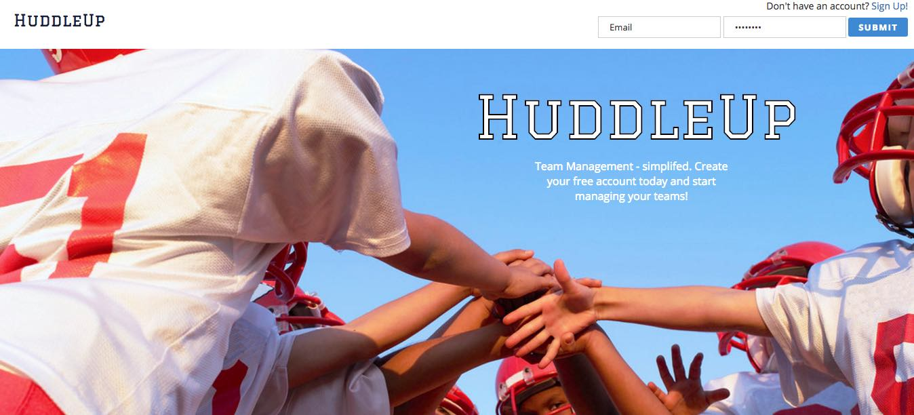

Jonathan Shaw
Full Stack developer

My name is Jonathan Shaw, and I am a Full Stack Web Developer based in Atlanta, GA. I attended the Georgia Institute of Technology for my undergraduate degree where I majored in Industrial Engineering. After graduation I held a variety of positions from IT support to designing assembly lines in Shenzhen, China. It wasn't long before I discovered my passion for coding.
I decided I was ready for a new challenge and moved on to web development. Through self-studying using online resources and motivation, I was able to develop simple programs with simple functions. In order to progress and code professionally, I enrolled in DigitalCrafts' full-time full-stack immersive coding bootcamp since February of 2017.
Transitioning from the manufacturing field into the programming field, I've noticed similarities between the two skill sets. Instead of creating working instructions for how many times a worker needs to rotate a screw, I am now providing instructions for how many times a computer needs to traverse a loop.
Check out my projects to see what I've been working on
I decided I was ready for a new challenge and moved on to web development. Through self-studying using online resources and motivation, I was able to develop simple programs with simple functions. In order to progress and code professionally, I enrolled in DigitalCrafts' full-time full-stack immersive coding bootcamp since February of 2017.
Transitioning from the manufacturing field into the programming field, I've noticed similarities between the two skill sets. Instead of creating working instructions for how many times a worker needs to rotate a screw, I am now providing instructions for how many times a computer needs to traverse a loop.
Check out my projects to see what I've been working on
front-end
HTML5CSS
Bootstrap
JavaScript/jQuery
AJAX/JSON
Responsive Design
back-end
Node.jsExpress
MySQL
Python
Development Tools
Amazon Web Services (AWS)Git
Postgres

HuddleUp is an full-stack project coded in javascript and html. It is a database heavy project with constant communication between front-end and back-end using express.
HuddleUp itself is a little league team management helper, it allows users to create an account and then either create/join a team for their children. In the team page users can view team rosters, send messages to other team members and view upcoming events. Owners of the team will have special access to functions such as creating an event or sending a text message to all related members of the team.
HuddleUp itself is a little league team management helper, it allows users to create an account and then either create/join a team for their children. In the team page users can view team rosters, send messages to other team members and view upcoming events. Owners of the team will have special access to functions such as creating an event or sending a text message to all related members of the team.

This mini-game is coded using python using pygame. The player will be able to play four mini-game at once. This is made capable by dividing the canvas into four separate blocks, each block initiating a separate instance of a class running a different game. Each game is running its own algorithm and game logic.
Get in touch